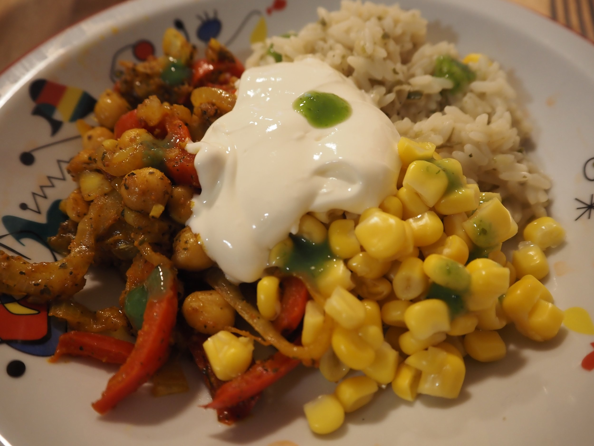
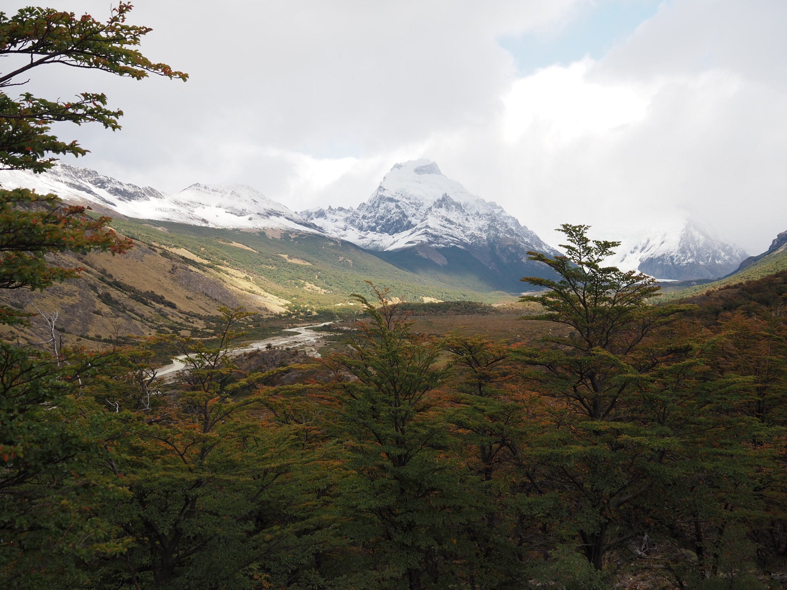
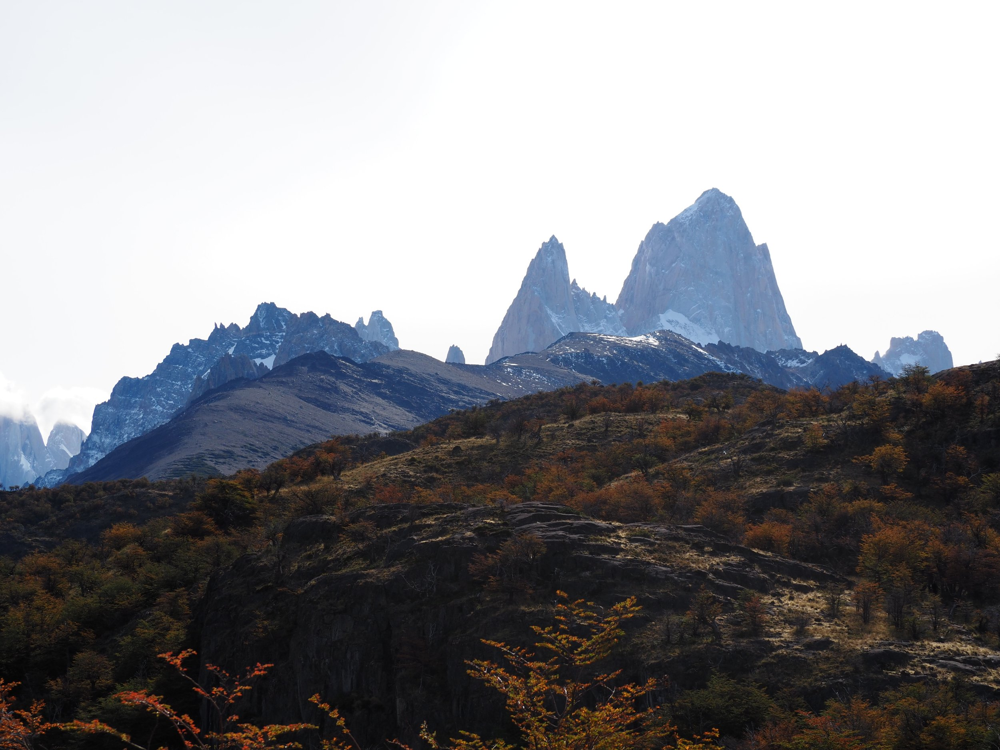
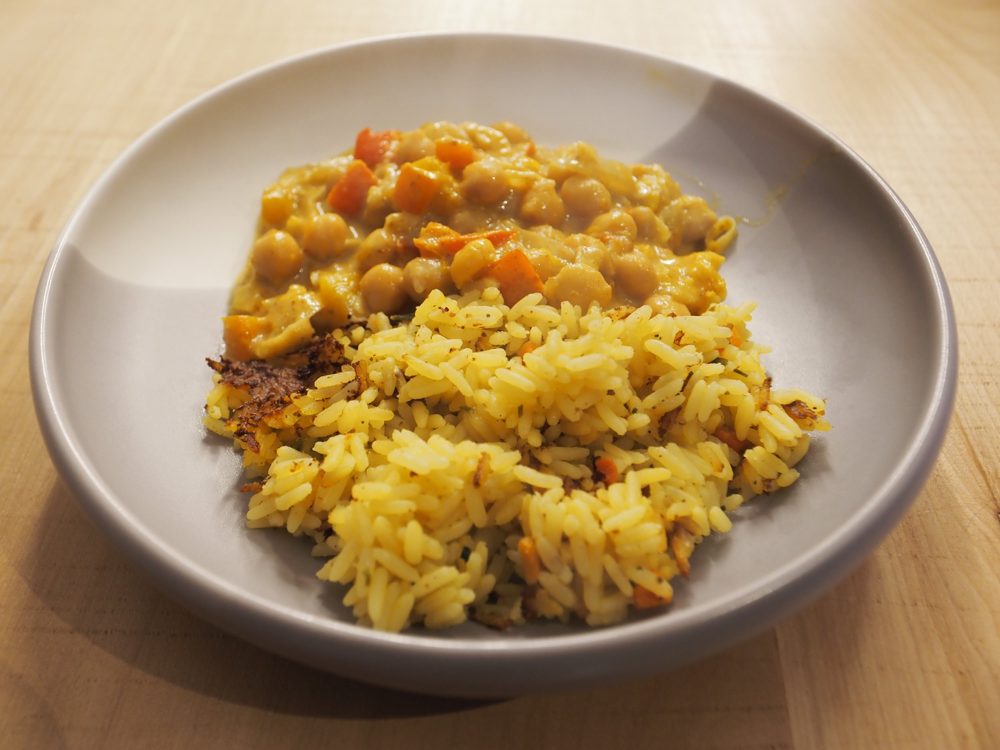
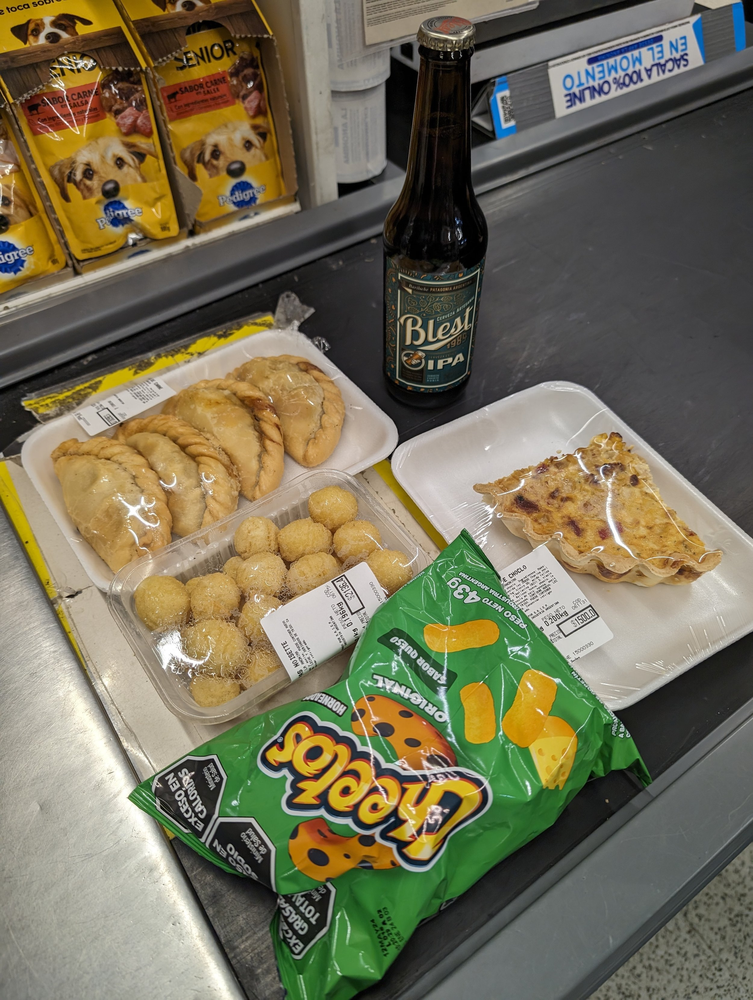
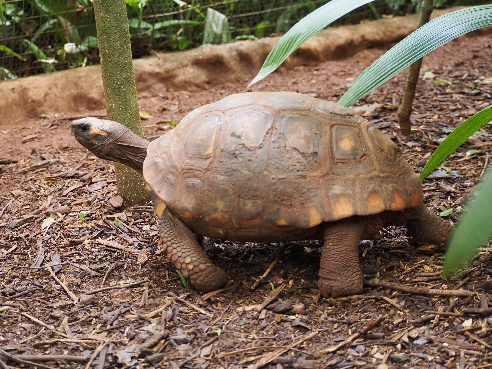
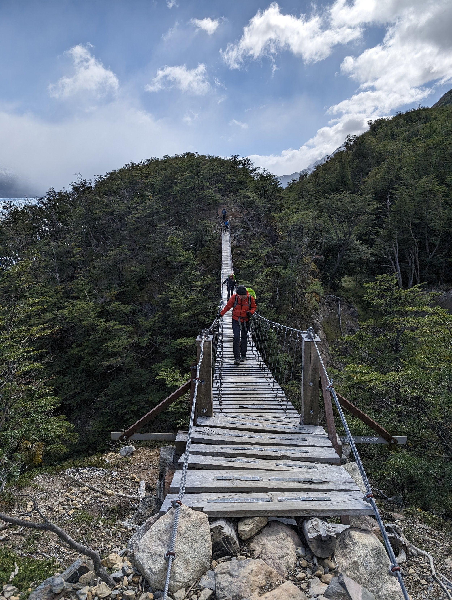

I had a few random thoughts and musings and had the idea of chucking them all into a Whole Food’s leftover cheese bin style post. So here it is!
Queso Crema
America needs queso crema. At a supermarket in In El Chaltén, we had a tricky time trying to cobble together ingredients to compose a decent “burrito bowl” dinner. Notably, we couldn’t find cheese and we couldn’t find sour cream. Kevin took a chance and bought some “CasanCrem” queso crema; we weren’t sure what it was since the literal translation of queso crema would be “cream cheese” and no one wants that on a burrito bowl. Well here is what “CasanCrem” is: imagine sour cream, take out the sour, and add cheese flavor. That’s what it is. It’s a glorious combination of two ingredients in one and we demolished the container in two dinners.
>

It’s fall… again!
During our first day in El Chaltén, we went on a short hike to a waterfall and I had a moment where I saw orange-ish, yellow-ish leaves and thought… it can’t possibly be Fall again?! Well, with one more second of reflection, of course it is! March is like September when the leaves changed color in Toronto and we’re getting round 2 now as Summer in Argentina comes to a close and we transition into Fall. Now I’m feeling some combination of weird deja vu and a bit of mourning for the end of summer… as I did just 6 months ago. I’m sure Patagonian Fall will be spectacular though; it already looks so beautiful.
>

>

Where is the salt?
I hate to say it, but Argentinian food is not great. Especially as a vegetarian. The thing that boggles me the most is the lack of seasoning in all the food. In no other land have I seen a salt shaker being offered at a high end restaurant; usually the food coming out of the kitchen has been salted to perfection. But no. Not here. Here, food comes out barely salted. You’re doomed if you order a pasta dish because most likely, the pasta has not been cooked in salted water. If a dish has cheese, you might be saved because of the salty cheese. And don’t get me started about spices. We finally found “curry spice” in a health food shop in San Martín de Los Andes and we dumped several tablespoons into a… well I suppose one could call it “curry”… that we made at our Airbnb and it was so glorious.
>

Health food shops
Speaking of health food shops, we’ve learned that whenever picking up groceries, we should visit a health food shop first, and then fill in the gaps with items from a standard supermarket. In Argentina, health food shops are more likely to have unique and tasty condiments (though the smoked garlic mayo we tried was a bit of a dud), spices beyond “rice seasoning” and oregano, and if you’re lucky, ingredients like soy sauce or tahini. We kept striking out at the larger supermarkets for ingredients that we’d want to make a curry-like stew or a stir-fry and often needed to pivot to some other plan, but then we’d find a health food store and wish we’d found it earlier with the selection that they carried (happened twice in both El Chaltén and Bariloche). These shops have been a life saver to cooking delicious dinners!
>

Homesickness
I wondered whether we would get “homesick” or not on this yearlong trip. On one long hike, I was thinking about how surprised I was that I wasn’t really yearning for “home” and I realized, perhaps one can’t be homesick if one doesn’t actually have a home. There’s no home city or bed that I have wished for since those don’t actually exist. All our stuff is in a storage unit and I do not wish to sleep in said storage unit. Do you know what I do yearn for? Good soap. I’m all out of the fancy toiletries I started the trip with like a Kiehl’s facial moisturizer and a nice smelling bar of rose soap. I’ve only been able to find bars of the classic Dove bar soap and it’s just not a great soap and if I had fancy soap, gosh would my shower experiences be so much more delightful.
>

The lost journal
I actually forgot to mention this in the O trek post. On the 5th day of the trek, Kevin was emptying out his backpack that he had rented from our hostel in Puerto Natales and realized that there was something hard on the backside of the backpack. Upon further investigation, he found a sleeve in the backpack and voila, uncovered a diary (written in German) and some doctor visit receipts. He said that he thought he had felt something hard against his back previously when wearing the pack but assumed it was the frame of the backpack. Our roommates at the refugio helped us out with the investigation process — we scoured the receipts and luckily there was a phone number on one of them. That was really lucky because there was no identification whatsoever in the journal itself. Our roommate happened to have internet and was able to WhatsApp the number and through them, we found out that a German woman had previously rented the backpack, accidentally left her journal there and had been trying in vain to get it back through the hostel. She was now in Guatemala. Kevin trekked the remainder of the circuit with the journal (so much for spending so much time nitpicking about trying to minimize pack weight!) and carried it to El Chaltén where we struck out in trying to ship it to Germany. It was extremely expensive and even the post office workers recommended to try from a larger city. So the journal continued its tour of Argentina to Bariloche where we finally were able to send it back to Germany hopefully to reunite with its owner!
>
